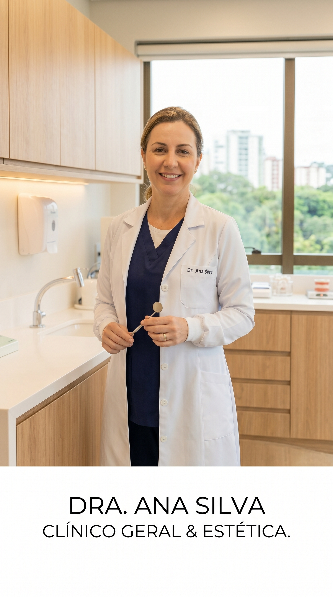
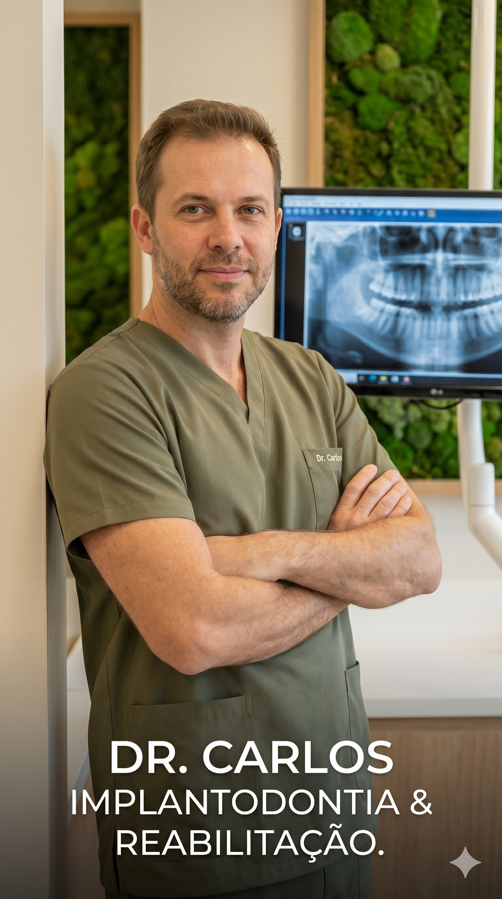

Clínico Geral & Estética
Graduada em Odontologia pela Universidade Federal do Rio Grande do Sul (UFRGS), Dra. Ana Silva
possui Especialização em Odontologia Estética e Restauradora. Sua paixão é transformar vidas
através de sorrisos bonitos e naturais, utilizando técnicas avançadas e um cuidado humanizado
para garantir o conforto e a autoestima de seus pacientes.
Implantodontia & Reabilitação
Formado pela Pontifícia Universidade Católica do Rio Grande do Sul (PUCRS), o Dr. Carlos é
Mestre em Implantodontia e Especialista em Reabilitação Oral. Com vasta experiência
clínica e
domínio absoluto de tecnologias digitais avançadas (como scanners intraorais 3D),
ele foca em
soluções precisas, duradouras e de alta performance, restaurando a função plena
e a harmonia facial.